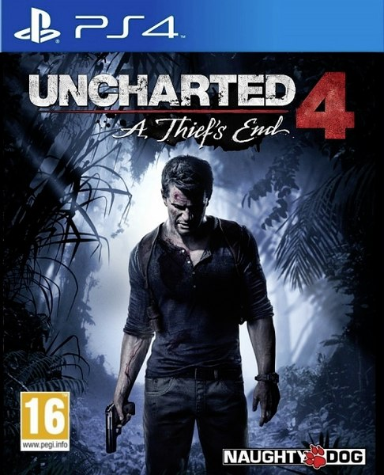
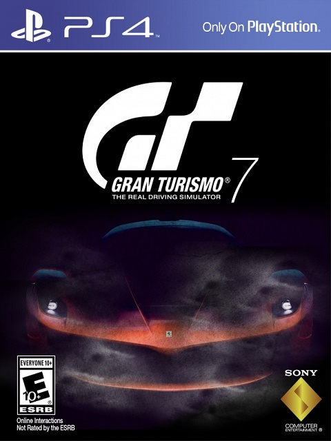
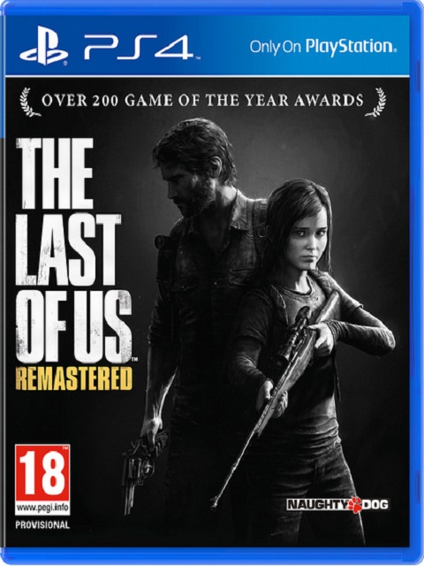
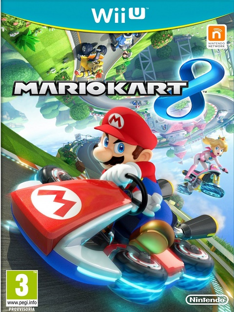
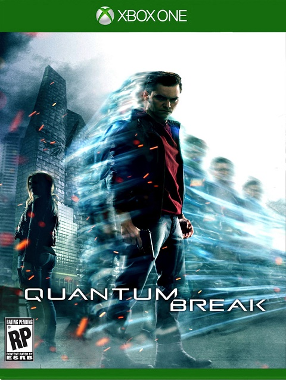

| Nome Oggetto | Descrizione | Foto | Quantità | Prezzo | Operazioni |
|---|---|---|---|---|---|
| Uncharted 4 PS4 | Uncharted 4: Fine di un ladro è un videogioco d'azione-avventura in terza persona pubblicato da Sony Computer Entertainment, in sviluppo da Naughty Dog in esclusiva per PlayStation 4. È il quarto e ultimo capitolo della serie Uncharted, ultimo con protagonista Nathan Drake e verrà pubblicato il 10 maggio 2016 |  | 24 | 70 euro | Aggiungi al carrello |
| Gran Turismo Sport PS4 | Gran Turismo Sport è un futuro videogioco di guida sviluppato da Polyphony Digital in corso di sviluppo per la console PlayStation 4. Annunciato durante l'edizione del 2015 della Paris Games Week a Parigi, si tratta del settimo capitolo principale della serie Gran Turismo in uscita nel corso del 2016 |  | 26 | 70 euro | Aggiungi al carrello |
| Last of Us Remastered PS4 | The Last of Us è un videogioco in stile avventura dinamica di sopravvivenza a sfondo post-apocalittico, sviluppato dalla casa di produzione Naughty Dog, in esclusiva per PlayStation 3 e PlayStation 4.Il 9 aprile 2014 viene annunciata sul PlayStation Blog ufficiale una versione del gioco "rimasterizzata" per PlayStation 4, intitolata The Last of Us Remastered. Presenta texture più definite, luci e ombre migliorate, una risoluzione nativa di 1080p, 60 frame al secondo, un documentario sulle cinematiche di gioco e tutti i contenuti scaricabili inclusi. La sua uscita è avvenuta il 29 luglio 2014. |  | 20 | 40 euro | Aggiungi al carrello |
| Mario Kart 8 WiiU | Mario Kart 8 è un videogioco di genere simulatore di guida sviluppato e pubblicato da Nintendo per Nintendo Wii U, ottavo della serie Mario Kart. Questo è il primo Mario Kart in HD, uscito il 28 maggio 2014.[2] Fanno ritorno le moto di Mario Kart Wii, assenti in Mario Kart 7. Si può andare sott'acqua, volare e raccogliere fino 10 monete come nel capitolo per Nintendo 3DS. La novità principale è il fatto che, in alcune piste, si può correre sottosopra o sui muri, sfidando la gravità. Nel mese di maggio 2014 Nintendo ha inoltre annunciato delle app ed applicazioni mobili dedicate al gioco. |  | 12 | 30 euro | Aggiungi al carrello |
| Quantum Break XboxOne | Quantum Break è un videogioco sviluppato da Remedy Entertainment e pubblicato da Microsoft Game Studios in esclusiva su Xbox One e Microsoft Windows 10, previsto per il 5 aprile 2016. Inoltre, è in produzione una serie TV chiamata appunto Quantum Break, che sarà inclusa nel gioco, in cui gli spettatori vedranno le vicende del gioco dal punto di vista dei nemici. |  | 25 | 60 euro | Aggiungi al carrello |